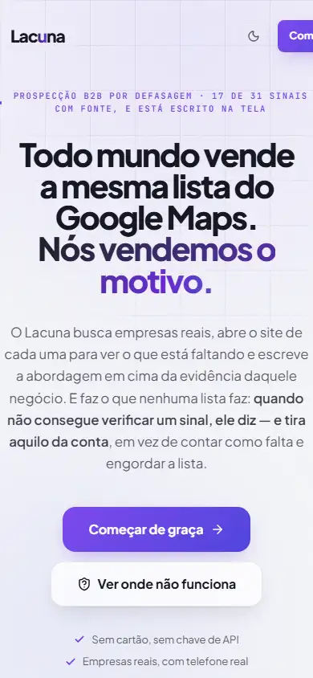

MenuFlow
Cardápio digital para bar, pizzaria, açaí e food truck. O cliente monta o pedido sozinho e ele chega pronto no WhatsApp do dono: item, quantidade, endereço e total. QR na mesa, link na bio, preço que muda em todos os canais de uma vez.
Londrina · Paraná
Você aprova por escrito o que a página precisa fazer. Ela entra no ar. Todo mês você recebe quantas pessoas chegaram e quantas falaram com você. Nenhum número sem a ferramenta e a data ao lado.
Onze da noite
Alguém vê seu perfil, toca no link e espera. A página demora a abrir. O cardápio é de outro mês. O formulário não cabe na tela.
Ela fecha e resolve com o concorrente. Amanhã você não vai saber que ela existiu, nem quantas outras fizeram o mesmo.
Público não faltou: ele chegou até o link. Faltou alguém contando o que acontece depois do toque.
Arraste a linha. A diferença entre as duas páginas não está no desenho — está em uma delas saber o que aconteceu.
← arraste →as etiquetas mostram o que passa a ser medido, não um resultado
Como funciona
Você aprova o primeiro antes do segundo começar. No celular, o que muda a cada etapa: telas reais, não ilustração.
Passo 03 · a mesma página, agora com número
O que a página precisa fazer, para quem, e como se prova que deu certo. Uma página escrita, em português, que você lê e aprova em uma tarde. Nada é construído antes disso.
Feita à mão, sem tema pronto e sem peso que ninguém pediu. Abre rápido no celular de quem está com pressa e sinal fraco — que é onde a decisão acontece.
Quantas pessoas chegaram, de onde vieram, quantas falaram com você. Com a ferramenta e a data ao lado de cada número, todo mês. Quando um número piora, ele aparece do mesmo tamanho.
O que construímos
Não são maquetes. São os dois programas que a gente desenhou, escreveu e mantém, com gente pagando para usar. Abra e confira.
Cardápio digital para bar, pizzaria, açaí e food truck. O cliente monta o pedido sozinho e ele chega pronto no WhatsApp do dono: item, quantidade, endereço e total. QR na mesa, link na bio, preço que muda em todos os canais de uma vez.

Prospecção que abre o site de cada empresa, vê o que está faltando e escreve a abordagem em cima da evidência. Quando não consegue confirmar um sinal, ele escreve que não confirmou. É a mesma régua do seu Raio-X.
O que a gente faz
Em quinze segundos a pessoa encontra o que precisa para decidir: o que você faz, onde fica, o que esperar, e um botão que abre o WhatsApp com a mensagem escrita. Cada palavra é escolhida junto com você, com os termos que os seus clientes usam.
Cardápio ou catálogo que funciona no QR da mesa e no link da bio. O pedido chega organizado no seu WhatsApp e o preço muda em todos os canais de uma vez. É o MenuFlow, no ar, e você pode testar agora.
Uma página por mês, não um painel cheio de gráfico. Quantas pessoas chegaram, de onde vieram, quantas falaram com você, e o que mudar no mês seguinte. Com a ferramenta e a data em cada número.
Você cola o link do seu Instagram ou do seu site. A gente devolve por escrito o que está travando as pessoas, quanto isso custa em cliente que desiste, e o que dá para arrumar sozinho. É a mesma análise do Lacuna, apontada para o seu negócio.
Por que trabalhar com a gente
Cada valor vem com a ferramenta que mediu e o dia da medição. É o que separa dado de opinião bem escrita. Passe o ponteiro em qualquer número desta página.
Você lê e aprova o que a página precisa fazer antes de existir código. Mais devagar na primeira semana, muito mais rápido depois.
O endereço, o código e as contas de medição são seus, no seu e-mail. Você troca de fornecedor quando quiser e leva tudo.
Esta página inteira pesa menos que uma foto de celular, e o número está no topo dela. A gente cobra de si o que cobra do trabalho.
Somos dois. Você fala direto com quem escreve o código e desenha a página, do primeiro contato ao relatório do mês.
Entrar no ar é o começo da medição, não o fim do serviço. Todo mês tem número novo e uma sugestão do que mexer.
Quem somos
nome e nome. A gente construiu dois produtos antes de abrir a porta, para errar no que era nosso. Em Londrina, onde todo mundo se conhece, trabalho bem feito é o que traz o próximo.
Medido agora, no seu dedo
Nenhum destes três números existia antes de você abrir esta página. Todos foram medidos aqui, no seu aparelho — e nenhum deles saiu daqui.
É o nosso trabalho em miniatura. Na sua página o número não é sobre rolagem: é sobre quantas pessoas chegaram às onze da noite, quantas ficaram e quantas te chamaram no WhatsApp.
Perguntas
O preço sai depois do Raio-X, por escrito e antes de começar. Nossos produtos têm preço fixo porque são iguais para todo mundo; a sua página não é. Dar um número antes de olhar o que você já tem seria chute — e chute é o que a gente tira do meio. Por isso o Raio-X é de graça: para a conversa começar com fato.
Você cola o link do seu Instagram ou do seu site. A gente devolve por escrito o que está travando as pessoas antes de elas falarem com você, quanto isso custa em cliente que desiste, e o que dá para arrumar sozinho.
Não pede cadastro, e-mail nem reunião. Prazo: a definir. Vagas por semana: a definir.
Pode abrir agora: o MenuFlow e o Lacuna estão no ar, com gente pagando, e os dois links estão nesta página. São produtos que a gente construiu do zero e mantém — desenho, código, texto e medição. Você usa em vez de acreditar.
A primeira semana é o combinado no papel; a construção começa depois da sua aprovação. O prazo exato sai na conversa de trinta minutos, quando a gente já sabe o tamanho do seu caso. E nunca é menor do que a gente cumpre com folga.
Fica. O domínio é registrado no seu nome, o código fica em um repositório seu e as contas de medição são criadas no seu e-mail. Se um dia quiser trocar de fornecedor, leva tudo e não precisa pedir nada para a gente. Não existe contrato de fidelidade.
O trabalho completo rende mais quando a gente senta junto e vê o movimento da sua loja, então a região é onde a gente é melhor. O Raio-X a gente faz para qualquer lugar do Brasil: manda o link e pronto.
Trinta minutos, no WhatsApp ou tomando um café aqui na cidade. Você fala do negócio, a gente escuta e diz como ajudaria. Sem apresentação de slides e sem proposta antes de você pedir.
O próximo passo
A gente devolve o Raio-X por escrito. Se fizer sentido para você, a conversa de trinta minutos vem depois. No seu tempo.